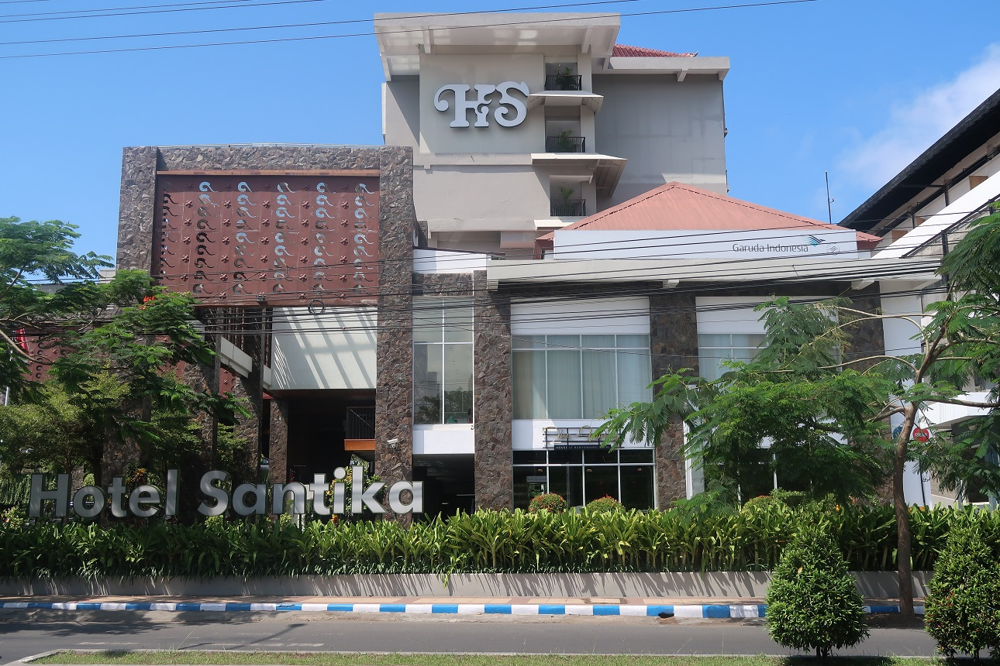
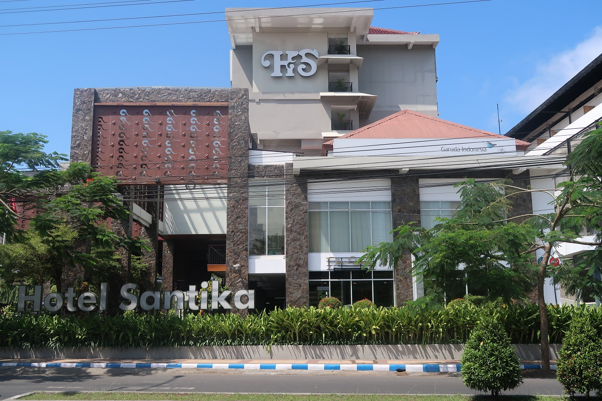

Detail Hotel
Hotel mewah yang berada di gedung kontemporer di sepanjang Jalan Nasional Rute 3 ini berjarak 6 km dari Pantai Cemara di Laut Bali dan 51 km dari Taman Nasional Baluran. Kamar simpel dan elegan memiliki Wi-Fi, TV layar datar, serta alat pembuat teh dan kopi. Kamar di kelas yang lebih tinggi dilengkapi balkon. Suite menyediakan area duduk, dan suite di kelas yang lebih tinggi memiliki dapur kecil dan ruang keluarga atau ruang makan. Beberapa kamar memiliki pemandangan laut. Tersedia room service. Terdapat kolam renang indoor, spa dengan gym, sauna, restoran mewah, dan rooftop bar dengan pemandangan laut. Fasilitas lainnya meliputi tempat parkir dan sarapan.
Detail Hotel
Terletak di pantai di tepi Laut Bali, hotel elegan yang menampilkan karya seni lokal ini berjarak kurang dari 1 km dari Jalan Nasional Rute 3. Kamar luas dilengkapi dengan Wi-Fi gratis, TV layar datar, pembuat teh dan kopi, jendela setinggi langit-langit, dan balkon. Beberapa kamar memiliki pemandangan laut. Suite menyediakan ruang keluarga. Gratis sarapan dan tempat parkir. Fasilitas lainnya termasuk gym, spa, dan kolam renang outdoor, serta bar dan restoran yang menawarkan tempat makan di udara terbuka.
Detail Hotel
Hotel kelas atas yang diapit taman hijau ini berjarak 6 km dari Pantai Cemara, 10 km dari Desa Wisata Osing, dan 8 km dari stasiun kereta Rogojampi. Kamar mewah dilengkapi balkon, AC dan TV layar datar, serta fasilitas pembuat teh dan kopi, dan Wi-Fi gratis. Restoran elegan dengan langit-langit berkubah. Fasilitas lainnya meliputi kolam renang outdoor, area bermain anak-anak, dan ruang acara. Sarapan tersedia dengan biaya tambahan.
Detail Hotel
Hotel terang yang sejuk yang berada di jalan ramai ini berjarak 6 km dari Pantai Sobo dan 9 km dari Desa Wisata Osing, sebuah desa adat dengan atraksi budaya. Kamar simpel dilengkapi karya seni penuh warna, Wi-Fi, TV layar datar, minibar, meja, serta alat pembuat teh dan kopi. Suite memiliki ruang keluarga dan balkon. Sarapan prasmanan tersedia. Ada restoran modern yang luas dengan teras, serta 2 kolam renang outdoor (1 untuk anak-anak) dan spa.